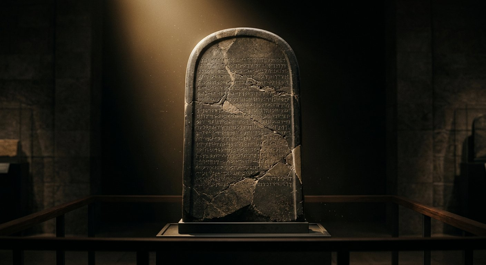

≈ 840 av. J.-C. · Dhiban · Musée du Louvre
La Stèle de Mésha
Preuve historique
Résumé. Découverte en 1868 à Dhiban (Jordanie), cette grande stèle de basalte — dite « pierre de Moab » — est gravée par Mésha, roi de Moab. Il y vante sa révolte contre le royaume d'Israël et nomme le roi Omri. Le livre des 2 Rois 3 raconte la même guerre, côté israélite.
« Je suis Mésha, fils de Chemosh, roi de Moab, le
Dibonite… Omri, roi d'Israël, avait opprimé Moab pendant de longs jours… J'ai pris de
là les vases de Jéhovah et je les ai traînés devant Chemosh. »
Stèle de Mésha, lignes 1-12 — moabite → français · comparer 2 Rois 3:4-5